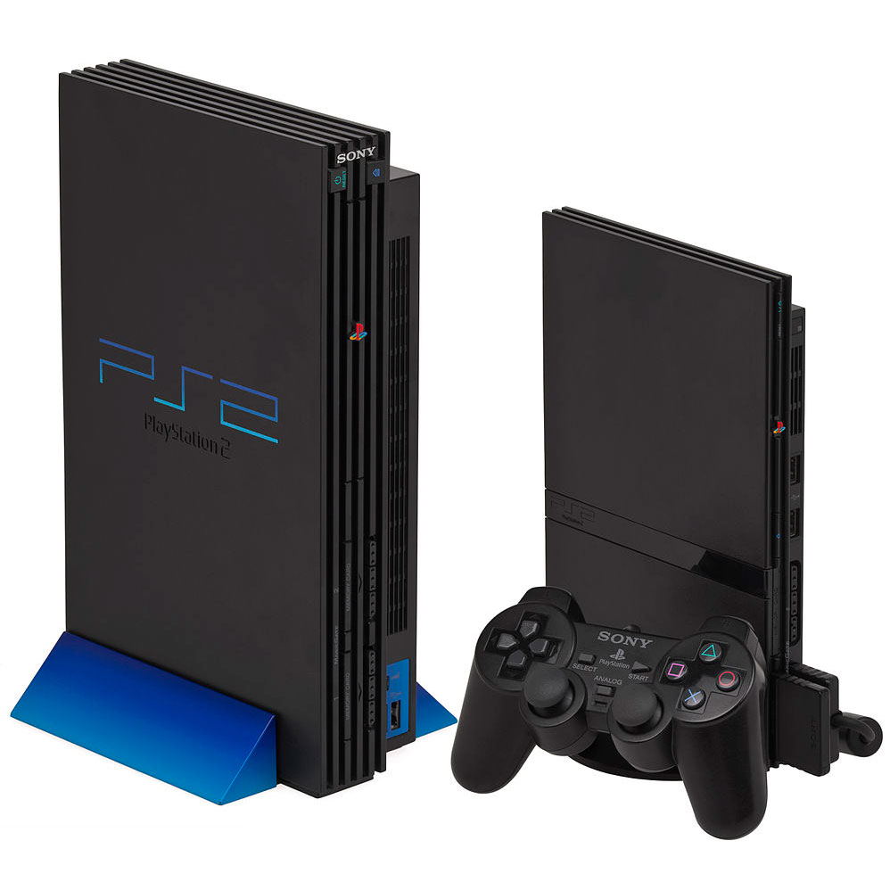

المنصة التي شكلت طفولة وشباب جيل كامل من اللاعبين
لم يكن جهاز PlayStation 2 الذي أطلقته شركة Sony عام 2000 مجرد منصة ألعاب عادية؛ بل كان ظاهرة ثقافية وتقنية اجتاحت العالم. بمبيعات تجاوزت 155 مليون وحدة، يتربع هذا الجهاز على عرش الأجهزة الأكثر مبيعاً في تاريخ البشرية، متفوقاً على جميع منافسيه بفضل مكتبة ألعاب ضخمة تجاوزت 3800 لعبة.

من منظور تقني وهندسي، كان الـ PS2 يمتلك معمارية معقدة وسابقة لعصرها. هذا العتاد هو ما سمح للمطورين باستخراج أداء مذهل عبر سنوات عمر الجهاز:
رغم التطور الهائل في عالم الحواسيب الحديثة ومعالجات الجيل الجديد، لا يزال مجتمع اللاعبين المخلصين (Modders) يقومون بتطوير محاكيات (Emulators) قوية لتشغيل ألعاب هذا الجهاز الرائع على الحواسيب الشخصية، مما يثبت أن متعة اللعب الأصيلة لا تموت بالتقادم.